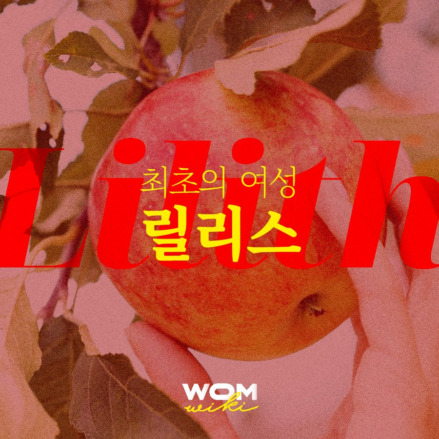

릴리스는 성경의 토대로 일컬어지는 바빌로니안 탈무드와 유대 신화에 나오는 최초의 여성이다. |  |
하와와 아담은 성경에 언급되는 최초의 여성과 남성이다. 반면 성경의 토대 중 하나로 일컬어지는 바빌로니안 탈무드와 일부 유대신화에 따르면, 최초의 여성은 하와가 아니다. 전설에 따르면 릴리스는 진흙과 하나님의 숨결을 통해 아담과 동시에 만들어진 최초의 인간이자 여성이다.
릴리스는 선악과를 먹고도 죽지 않는 것을 보고 욕망이 좋은 것임을 깨닫는다. 이를 통해 릴리스는 욕망에 솔직해지고 자기가 원하는 바를 요구할 수 있는 여성으로서의 면모를 드러낸다. 그러나 아담은 릴리스가 요구한 여성상위 체위를 거절하며 다툼을 일으킨다. 다투던 와중 릴리스는 야훼의 이름을 부르는 죄를 범하고, 결국 낙원에서 도망치게 된다. 신은 천사 셋을 보내 릴리스를 뒤쫓았지만 릴리스는 자식을 죽이겠다는 신의 위협에 굴하지 않고 동굴에서 혼자 사는 길을 택한다.
시간이 흘러 변형된 전설 속 릴리스는 마녀, 또는 악마 사마엘의 아내로 묘사된다. 또는 아기들을 유괴하는 악명 높은 밤의 악마로 표현된다.
릴리스는 모성을 지니지 않았다. 릴리스는 쾌락 그 자체를 추구하며, 자녀의 상실과 고독으로 자유의 대가를 치른 최초의 여성입니다.